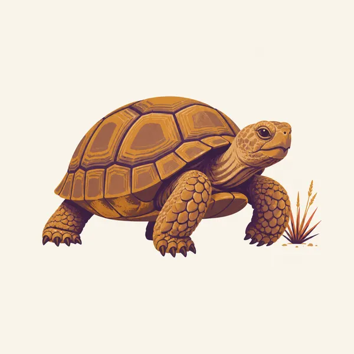
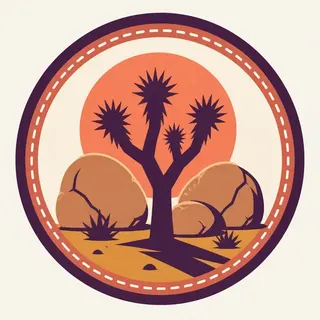

01
Joshua tree woodland
The branched yuccas of the Mojave, often with a boulder nearby for scale. They are not cacti. The distinction matters if you want to understand what you are seeing.
TrailMark Archive Edition
California | Two deserts
Yucca branches and piled granite sit where the Mojave gives way to the lower Colorado Desert.
Archive No. TM-JOTR-015
National Park since 1994
Collection Desert Parks
Park Overview
Joshua Tree National Park in Southern California is the meeting of the higher Mojave Desert and the lower Colorado Desert. The Joshua tree, Yucca brevifolia, belongs to the Mojave side.
The northern and western parts of the park are boulder country: monzogranite weathered into piles that climbers and hikers both use. The southeastern part drops toward creosote, ocotillo, and a drier Colorado Desert floor where the Joshua trees thin out.
The park became a national park in 1994 after years as a national monument. The name is a plant, and the plant is a climate. It does not grow just anywhere the rocks are pretty.
Emotional Thesis
A Joshua tree is awkward on purpose: a branched yucca that looks invented. When the trees stop, you have left the Mojave, even if the boulders continue a little farther.
The park's quiet is real at dawn and theoretical at a crowded sunset turnout. Both are true. TrailMark prefers the version where you can hear the wind in the spines.
Landscape Highlights
01
The branched yuccas of the Mojave, often with a boulder nearby for scale. They are not cacti. The distinction matters if you want to understand what you are seeing.
02
Hidden Valley, Jumbo Rocks, and their neighbors are joints in granite opened by weathering until the blocks stacked themselves. Climbers use them. Hikers can walk the bases without entering someone else's route.
03
Ocotillo and cholla take over as the elevation drops. This half of the park is why the name is incomplete. Come down here or you have only visited the Mojave.
Wildlife
Coyotes, desert tortoises, kangaroo rats, and lizards share the two deserts. Midday looks empty because that is a survival strategy.

01
Desert tortoises are protected and easy to harm with a helpful lift. If you see one, leave it on the ground and give it the trail.
02
Coyotes near picnic areas are learning the wrong lesson if food is out. Store it as if the animal is already watching, because it may be.
03
Bighorn sheep use the mountain edges of the park more than the sunset turnout. Distance is the courtesy.
Geology
The boulder piles are monzogranite, cracked along joints and worn into rounded blocks. The deserts on top of that stone are a climate story, not a second kind of rock.
01
The stacked look of Jumbo Rocks is weathering along fractures, not a glacier dropping erratics and not someone stacking stones.
02
The Mojave-Colorado transition is elevation and rainfall as much as a line on a map. The plants are the legend.
03
Earthquake country is real here. The geology is not only the pretty boulders. Faults run through the region, which is why the basins exist.
The walking season. Nights freeze and days are clear. The yuccas do not care. You will.
Flowers if the rain came. They are a bonus, not the park. The boulders and the trees are here either way.
Harsh on the lower desert and still hot among the rocks. Climb and hike early. Water is not optional because the scenery is dry.
Heat eases and the light goes amber on the granite. A good time to learn the difference between the two deserts without rushing.
Photography
Joshua Tree sunsets are famous enough to become the same photograph. The specific tree and the specific joint in the rock are the way out.
01
A single yucca against one boulder reads as this park. A grove plus a sunset plus a pile of rocks reads as a poster.
02
If you can, make one frame on the Mojave side and one among ocotillo. The pair is the essay.
03
The park is a dark-sky place in practice when you get away from the highway. Follow the rules for where you may be after dark, and do not light the desert for a brighter foreground.
Field Notes
The Joshua tree looks like a drawing of a tree by someone who had only heard about trees, and that is exactly why it belongs in an archive.
TrailMark Field Notes

Badge Story
The badge fails if the plant could be a saguaro or a fir. The arms and the boulder are the whole idea.
Spiky crowns on awkward branches, Mojave green against desert orange.
A pale boulder keeps the plant from floating.
It should feel like California desert, distinct from Death Valley's salt and from Utah stone.
Archive No.015
LocationMojave edge
ReleaseYucca Mark
Stewardship / Safety
Joshua Tree is near Los Angeles and it still behaves like a desert. Check NPS for heat, fire, and road status. Popularity does not add water.
Carry water for the temperature, not for the length of the trail on a mild morning.
Do not touch or move desert tortoises. Report the sighting if the park asks, and otherwise let the animal leave.
Stay off plants and soil crust. A Joshua tree grows slowly enough that a broken arm is not a joke.
Climbers and hikers share the boulders. Do not walk under someone on a rope, and do not add chalk graffiti to the rock.
Current conditions, fees, and alerts are on the National Park Service site.
Continue the Archive
Death Valley is the extreme basin to the north. Yosemite is the Sierra contrast, already open, where granite means cliffs instead of piles.